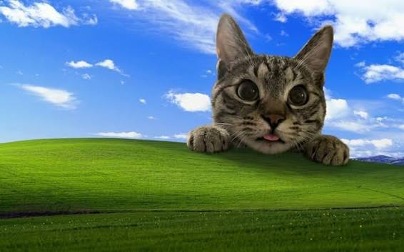

웹(web) 의 원래 뜻은 '거미줄'이다.
좀더 정확하게 표현하기 위해서는 거미실(spider's silk)로 만든 거미집(web)을
뜻하는 말인데, 한국어에서는 이를 '거미줄'이라고 뭉뚱그려 사용하고 있다.
그런데, 단어의 의미가 거미줄 처럼 생긴 무언가를 지칭하는 말로 확장되고,
21세기에는 그냥 웹이라고 부르면 월드 와이드 웹, 즉 인터넷을 의미한다.
웹사이트라는 표현도 여기서 유래했다.
